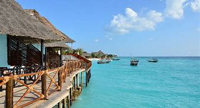
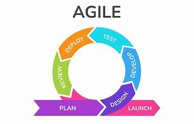
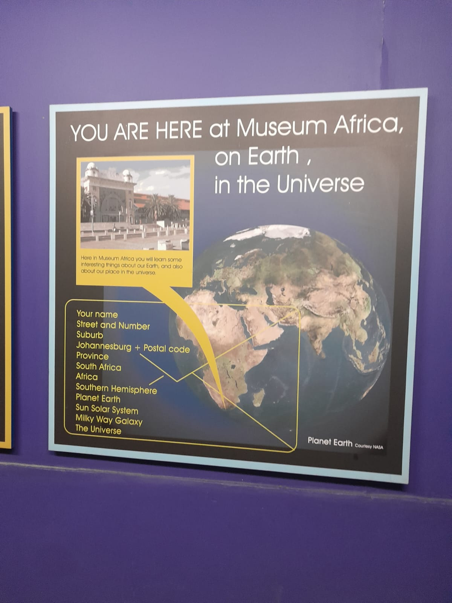
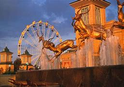
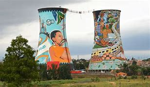

Mbali Maduna

City I Would Like to Visit
I would like to visit Zanzibar. Zanzibar has always intrigued me with its rich cultural heritage, beautiful beaches, and vibrant history. The island offers a unique blend of African, Arab, and European influences, making it a fascinating destination to explore. From the historic Stone Town to the pristine shores, Zanzibar promises an unforgettable experience filled with adventure and relaxation.
Foreign Language I Would Like to Learn
I would like to learn Swahili. Swahili is a beautiful and widely spoken language in East Africa. Learning Swahili would not only enhance my communication skills but also deepen my understanding of the rich cultures and traditions of the Swahili-speaking regions.
| English | Swahili |
|---|---|
| Hello | Habari |
| Thank you | Asante |
| Please | Tafadhali |
| Yes | Ndio |
| No | Hapana |
Favourite Subjects
The following subjects are my favourite so far for the University of Johannesburg Accenture programme.
FULL STACK WEB DEVELOPMENT FOR 4IR
This has been my favourite subject so far, because of the skills I have gotten from the program. The program focuses on equipping learners with the skills and knowledge necessary to develop web applications across the entire technology stack, in the context of the Fourth Industrial Revolution (4IR).
AGILE RAPID SKILLS ACQUISITION
This subject focuses on teaching learners how to quickly acquire new skills and adapt to changing requirements in an agile and efficient manner.
ENGINEERING BUSINESS SYSTEMS FOR 4IR
This subject is designed to prepare students to design, implement, and manage business systems within the context of the Fourth Industrial Revolution (4IR).
Historical Places in Johannesburg
The following are my chosen historical places in Gauteng, Johannesburg. These are fun, educational, and recreation places you can visit.
Museum Africa
The museum's collections cover a wide range of topics, including archaeology, ethnography, social history, and photography. It showcases artifacts and exhibits that explore the cultural diversity and rich heritage of South Africa, with a particular focus on the history of Johannesburg and its people.
Gold Reef City
Gold Reef City is an iconic amusement park and entertainment complex located in Johannesburg, South Africa, built around the site of a former gold mine. One of the most fascinating aspects of Gold Reef City is that it's built on the grounds of an authentic 19th-century gold mine. Visitors can experience a glimpse into the past by exploring the underground mine tour, where they can witness the conditions and challenges faced by miners during the gold rush era.
Soweto Towers
The Soweto Towers, also known as the Orlando Towers, were originally built in the 1950s as part of the Orlando Power Station. The towers served as cooling towers for a coal-fired power plant that supplied electricity to Johannesburg and the surrounding areas. The Soweto Towers have become a popular destination for adventure seekers, offering the opportunity to experience the adrenaline rush of bungee jumping from a height of 100 meters (approximately 328 feet). It's one of the highest bungee jumps in the world from a man-made structure and provides breathtaking views of Soweto and Johannesburg. The towers have been featured in various films, documentaries, and media productions, both locally and internationally.